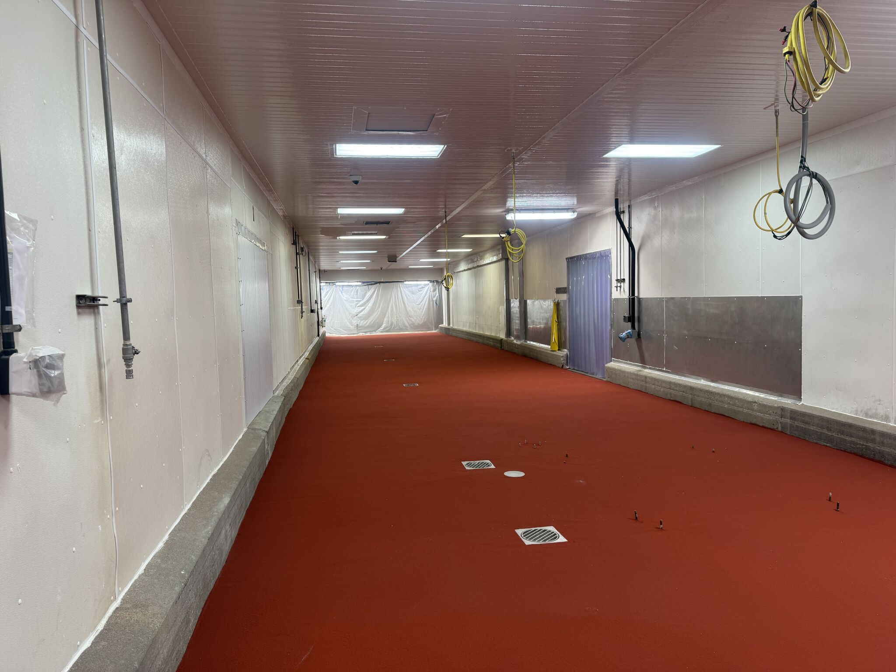
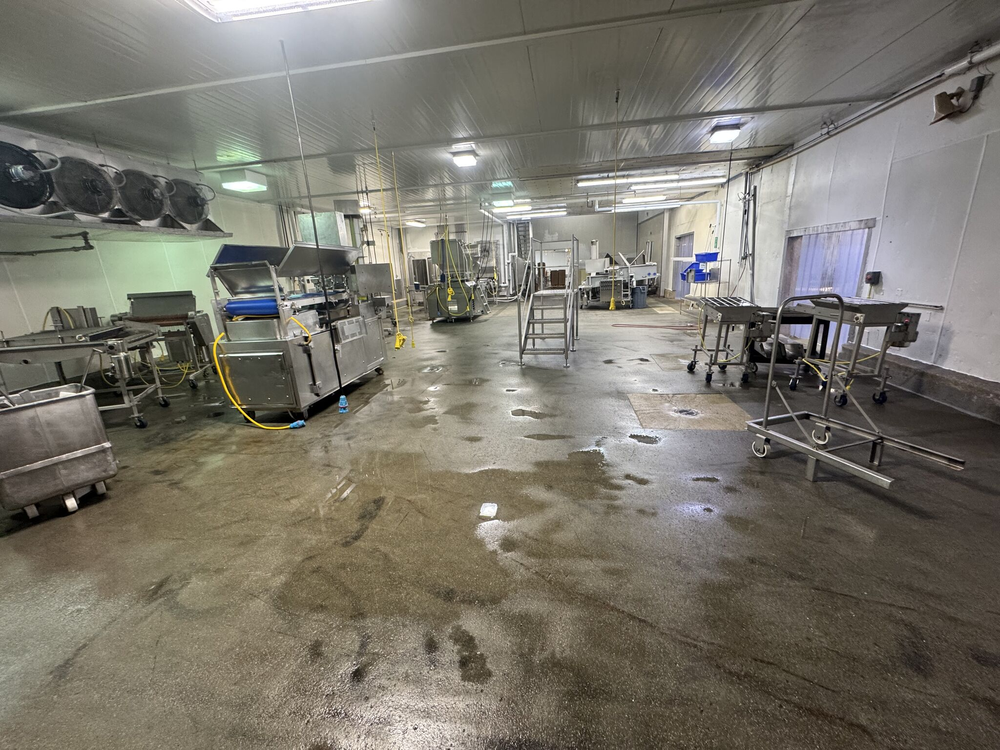
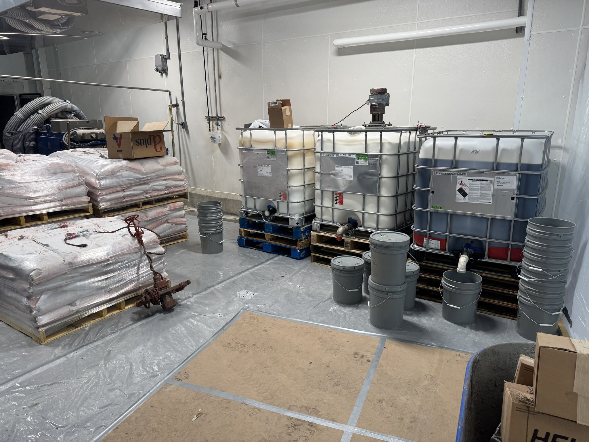
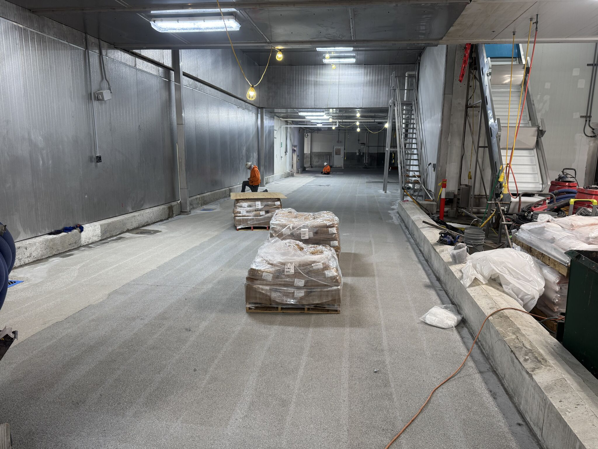
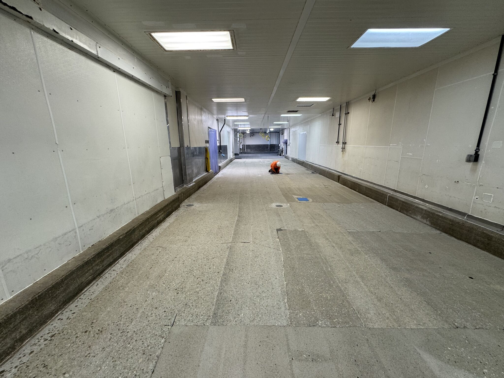
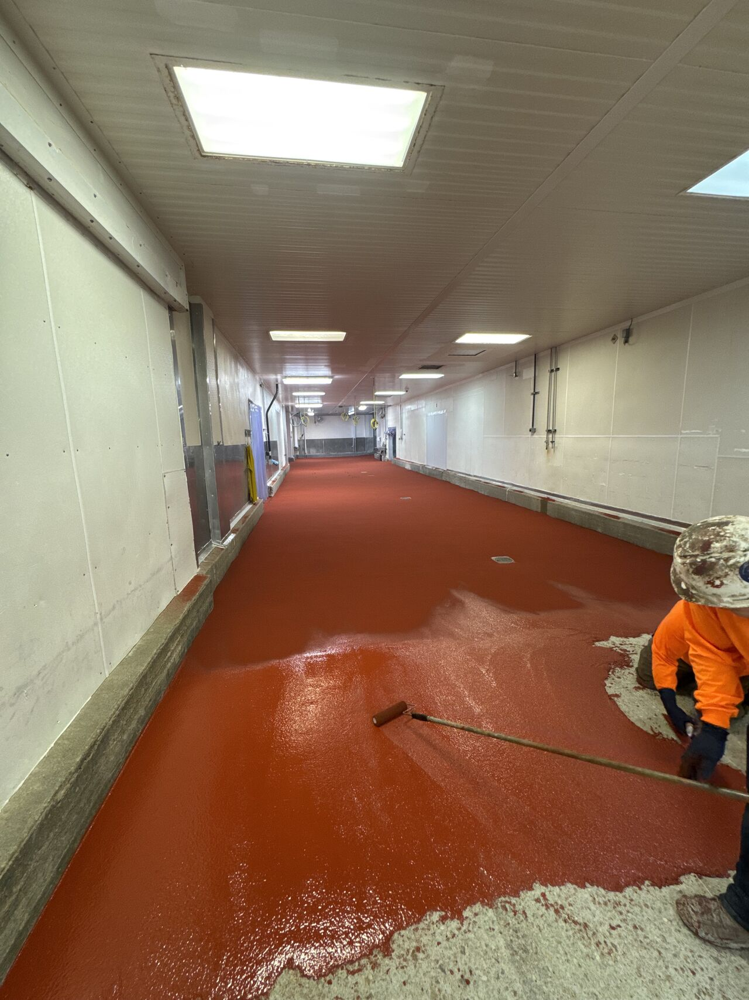
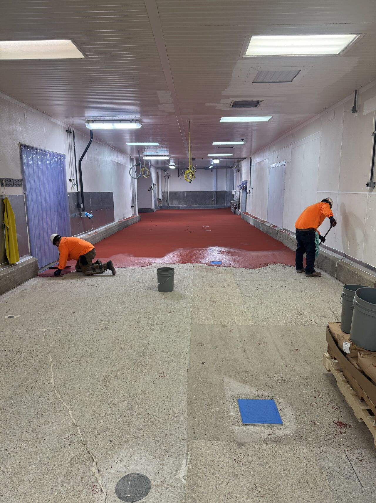

The ultimate compliment in this business? When someone moves to a new plant and brings you with them. We've been working with this client for over 20 years. That kind of loyalty doesn't come from slick sales pitches. It comes from showing up, doing the work right, and standing behind it.

The Project: 7,000 SF Oven Room
This was a brand new oven room at the client's new facility. 7,000 square feet of SaniCrete STX — our stainless steel reinforced cementitious urethane — installed to handle the extreme heat cycling, thermal shock, and aggressive washdowns that oven rooms demand daily.

Oven rooms are some of the toughest environments for flooring. Temperatures swing from ambient to extreme heat during production, then get hit with cold water during washdown. That thermal shock destroys conventional coatings and epoxies. STX is engineered specifically for this kind of abuse.
Before: Bare Concrete




Materials Staged and Ready

Installation in Progress





Phase 2 on Deck
We're already coming back for phase 2 to lay down more flooring and get the curbs coated with our SaniCrete VR system with cant cove. Cant cove creates a smooth, radiused transition between the floor and the wall or curb — eliminating the 90-degree corners where bacteria, moisture, and debris love to collect. It's a critical detail for any facility that needs to pass sanitation audits.
20 Years of Repeat Business
We don't chase one-time projects. We build relationships. When a maintenance director or plant manager moves to a new facility and the first call they make is to us, that tells you everything about how the last floor held up. This client has seen our work perform through years of production, washdowns, and audits. When it was time to spec flooring for a new plant, there was no bidding war. He knew what he wanted.
That's the standard we hold ourselves to on every job. The floor we install today should be the reason you call us for the next one.
Products Used
- SaniCrete STX — Stainless steel reinforced cementitious urethane, 7,000 SF oven room installation
- SaniCrete VR — Vertical and cove base system with cant cove (Phase 2)